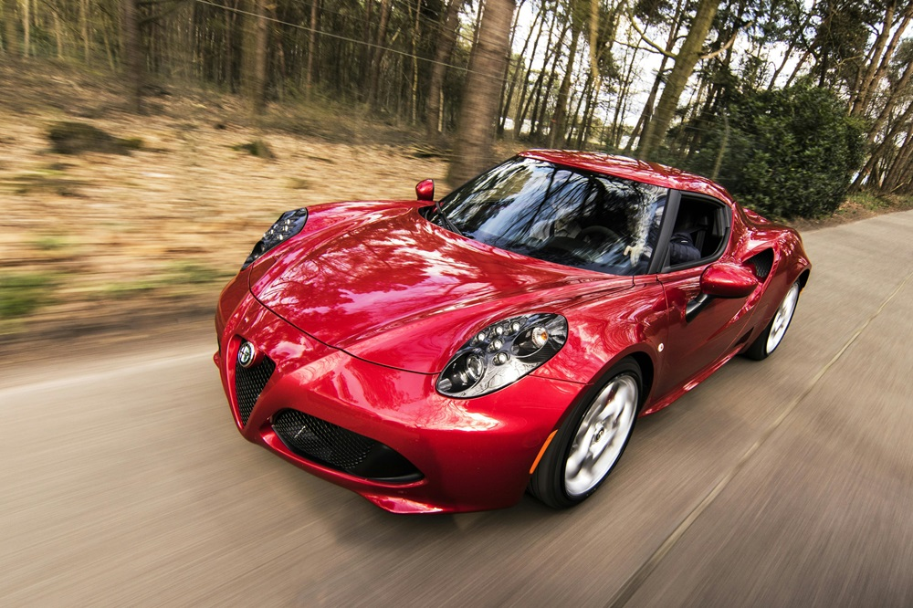

AUTOMOTIVE
Project management of PC application development (C#, MVVM) for interfacing to BMW
ECUs via CANBUS and FLEXRAY protocols.
Working for a Bangkok-German based software testing house I was able to experience
managing a small team of highly skilled local software engineers producing the firmware
and PC GUI software for interfacing and controlling multi-drop vehicle BUS communications data.